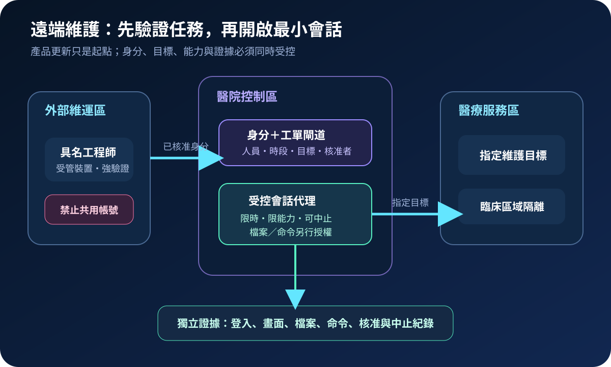
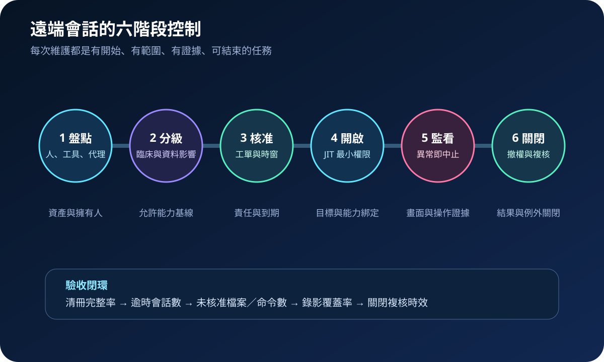
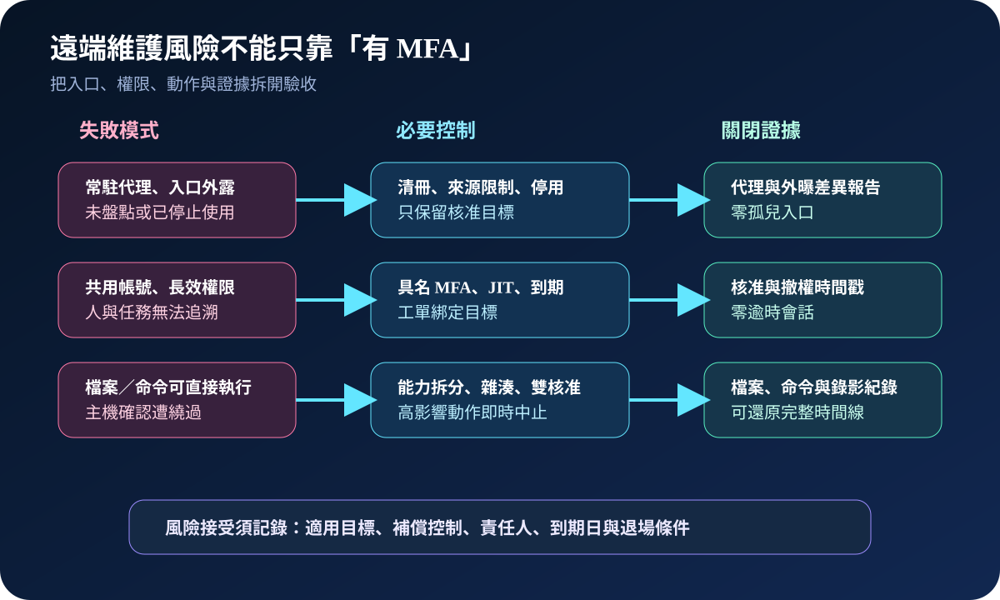

醫療資安國際觀察 · 2026-09-14
醫療遠端維護如何避免變成無人看守通道：從限時授權到會話證據
作者：Dr. William｜醫療資訊與資安治理實務工作者
醫療設備與資訊系統常需供應商即時維修。安全重點不只是能否登入，而是每次連線能否回答「誰、為何、連到哪裡、能做什麼、何時結束，以及留下哪些證據」。
名詞解釋：遠端會話不是永久通行證
遠端支援工具讓技術人員查看或操作遠端端點；主機確認是由受支援端同意特定動作；JIT（Just-in-Time）授權只在核准時窗開放權限；特權會話則可執行管理、檔案傳輸或命令。這些能力應分開授權，不能因已登入就全部開放。
國際現況與適用邊界
ConnectWise 於 2026 年 9 月 8 日公告 CVE-2026-84869：特定情況下，ScreenConnect 26.6.5 以前版本的用戶端，可能讓檔案在既有遠端會話中未經授權或主機確認即被傳輸與執行；公告明確指出伺服器不受該條件影響。CISA 於 9 月 11 日將此漏洞列入 KEV，表示已有遭利用證據，並標示需要鑑識分流。
法域與產品邊界：CISA 的修補期限與 BOD 26-04 義務適用美國聯邦文職行政機關，不是台灣醫院的法定期限。該漏洞描述也不能推論所有遠端工具均受影響。台灣機構應依實際產品、版本、部署型態、外部曝險與臨床影響決定處置優先序。
規劃：以服務與會話為管理單位
範圍需涵蓋遠端支援伺服器、端點代理、雲端租戶、供應商帳號、跳板、工單與日誌。系統擁有人確認維護需求；臨床單位核定可用時窗；資訊與設備單位限制目標；資安單位驗證身分、曝險及證據；採購單位要求支援期限、通報與緊急停用機制。驗收可追蹤清冊完整率、逾時會話數、共用帳號數、未核准高影響動作數及錄影覆蓋率。

實作：更新與證據保全並行
- 盤點：比對伺服器、代理版本、外部入口、供應商、目標系統及擁有人，找出孤兒代理與未核准入口。
- 快速分流：確認是否使用受影響產品與版本；依供應商公告更新伺服器後，重新安裝主機用戶端並更新存取代理。無法立即更新時，公告所述停用檔案傳輸僅是暫時緩解。
- 保全與檢查：更新可能改變跡證；疑似遭利用時，先依事件範圍保存會話、帳號、檔案傳輸、程序及網路紀錄，再修補、隔離與擴大調查。
- 收斂權限：採具名帳號、抗釣魚 MFA、來源限制、JIT 與工單綁定；把檔案傳輸、命令執行、剪貼簿及重啟分成獨立能力。
- 關閉驗收：終止會話、撤回臨時權限、核對變更與檔案雜湊，確認臨床功能、告警及回滾，並由系統擁有人完成複核。
風險：已修補不等於會話可信
只更新產品可能遺留異常帳號、舊代理與既有持久存取；只開 MFA 仍無法限制已授權會話內的檔案與命令。過度封鎖則可能延誤設備復原。高影響操作應有即時中止與臨床降級路徑；無法記錄畫面時，至少保存操作者、目標、時窗、命令、檔案、核准及結果。證據保存期限須依契約、事件處理與本地法規另行決定。

可執行清單
- 能否列出所有遠端支援伺服器、代理、租戶、外部入口、擁有人與版本？
- 每次會話是否綁定具名人員、工單、指定目標、能力與到期時間？
- 檔案傳輸與命令執行是否需要額外核准，且可立即中止？
- 疑似遭利用時，是否先保存必要證據，再更新、隔離與調查？
- 更新後是否同步更新代理、撤權並驗證臨床功能與稽核紀錄？
- 停止使用的代理、帳號與防火牆路徑是否在期限內移除？
來源
- CISA｜Known Exploited Vulnerabilities Catalog：CVE-2026-84869（加入：2026-09-11；查閱：2026-09-14）
- ConnectWise｜2026-09-08 ScreenConnect Bulletin（發布：2026-09-08；查閱：2026-09-14）
- CISA｜BOD 26-04 Implementation Guidance（發布：2026-06-10；更新：2026-08-25；查閱：2026-09-14）
- NIST｜SP 800-46 Rev. 2：Enterprise Remote Access Security（發布：2016-07；查閱：2026-09-14）
內容說明
本文依健康台灣深耕計畫相關治理內容整理，並參考 CISA、ConnectWise 與 NIST 公開資料，提出台灣醫療機構可採用的遠端會話治理與驗收方法；不取代主管機關公告、法律意見、產品文件、事件鑑識或個案臨床風險判斷。